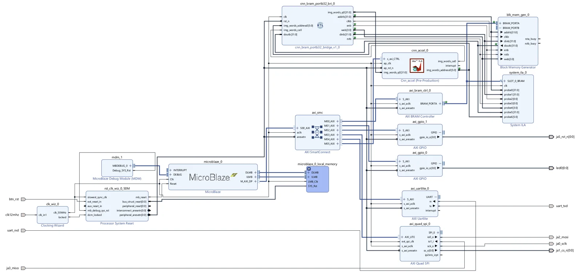
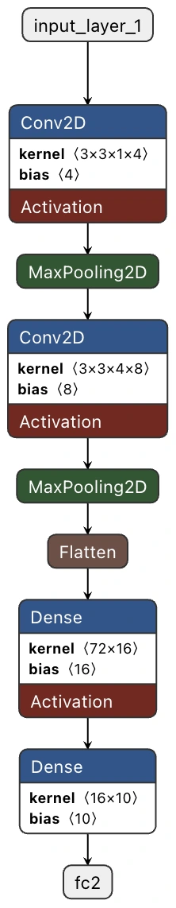

Train
MNIST images resized from 28 × 28 to 14 × 14.
An end-to-end handwritten-digit classifier: train on MNIST, implement the network in Vitis HLS, integrate it into a MicroBlaze system, and send images from a local browser demo over Ethernet.
The HLS accelerator is packaged as a Vivado IP for the Cmod A7-35T. A MicroBlaze runs bare-metal C in Vitis and shares image data with the CNN through an AXI BRAM Controller, Block Memory Generator and custom 32-bit BRAM bridge. AXI SmartConnect joins the control peripherals; AXI Quad SPI talks to the external W5500, AXI GPIO controls its reset, and AXI UARTLite and System ILA support debugging.

The Cmod A7 has no built-in Ethernet connector; the W5500 is an external SPI Ethernet module.
The network accepts a 14 × 14 grayscale digit. Two 3 × 3 convolutional layers with 4 and 8 filters learn spatial features; each is followed by ReLU and 2 × 2 max pooling. The resulting 3 × 3 × 8 feature map is flattened to 72 values, passed to a 16-neuron dense layer and mapped to ten output logits. The diagram is shown as a compact preview; open it for the complete layer sequence.

| Stage | Output / role |
|---|---|
| Input | 14 × 14 × 1 grayscale |
| Conv2D + ReLU | 4 filters, 3 × 3, same padding |
| MaxPooling2D | 7 × 7 × 4 |
| Conv2D + ReLU | 8 filters, 3 × 3, same padding |
| MaxPooling2D | 3 × 3 × 8 |
| Flatten → Dense | 72 values → 16 ReLU neurons |
| Output | 10 logits → argmax digit |
The TensorFlow/Keras notebook loads MNIST, normalizes grayscale pixels to [0, 1] and bilinearly resizes 28 × 28 images to 14 × 14. It trains with Adam and sparse categorical cross-entropy for 8 epochs using a 10% validation split. Trained weights are rounded and clipped to signed 8-bit values at scale 128 (Q1.7); biases are exported as int32 at scale 32,768. The arrays become a C header for the Vitis HLS accelerator, which uses 16-bit activations, 32-bit accumulators and explicit scaling shifts.
196 pixels are packed four per 32-bit word into 49 shared BRAM words. The HLS top reads them through an ap_memory interface.
AXI4-Lite registers expose start/done control, the predicted digit and debug readbacks. Selected loops use HLS pipeline pragmas.
The flatten loop follows Keras channels_last order: row → column → channel. A different order would change the Dense layer inputs.
A C++ HLS testbench checks the accelerator before export; firmware UART commands and debug registers then verify that the IP reads the same BRAM words written by MicroBlaze.
The browser is the front end; the classification happens in the FPGA. Draw a digit in the local Flask demo and press Predict. The image is converted into a 14 × 14 grayscale frame, sent over UDP and classified by the HLS CNN. The returned digit appears beside the drawing.

MNIST images resized from 28 × 28 to 14 × 14.
Export fixed-point weights and biases to a C header.
Implement the network as a Vitis HLS IP.
MicroBlaze, shared BRAM, AXI peripherals and W5500.
Flask canvas sends a frame and displays the FPGA reply.
The local Flask app converts the canvas image into an MNIST-like frame and sends 196 pixel bytes over UDP. Bare-metal firmware receives the frame through the W5500, writes 49 packed words to shared BRAM, starts the HLS accelerator, reads its prediction and sends a short UDP reply. The web page presents the returned result. The demo requires the programmed board and local server; this portfolio page documents it rather than emulating inference.
| Connection | Function |
|---|---|
| Browser → Flask | Canvas capture, resize and display |
| Flask → W5500 | UDP image packet with 196 grayscale pixels |
| W5500 → MicroBlaze | External Ethernet controller via AXI Quad SPI |
| MicroBlaze ↔ BRAM | 49 packed 32-bit image words shared with HLS |
| HLS IP → MicroBlaze | AXI4-Lite prediction and debug registers |
| MicroBlaze → browser | UDP prediction reply through Flask |
The repository includes the Colab notebook, HLS C++ and testbench, Vivado project source, Vitis firmware, Flask app and setup notes.
Open GitHub repository ↗